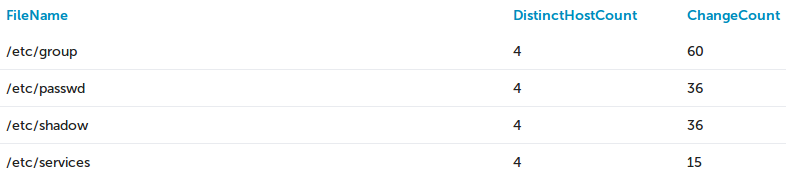
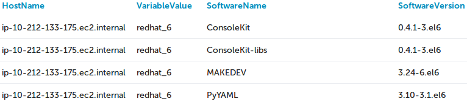

SQL Schema
CFEngine allows all standardized SQL SELECT constructs to query, with the
following additions:
TIMESTAMP_UNIX() - seconds elapsed since 1970TIMESTAMP_UNIX_DAYS() - days elapsed since 1970
These are added to avoid use of non-portable SQL date/time functions.
Examples
- Group LAST status of promises in bundle "ntp" in hosts matching class
"ntp_server".
The result should include a list of the promises in the bundle, together with
counts of the four statuses (kept, repaired, not kept, unknown).
SELECT Status, Count(*)
FROM PromiseStatusLast
WHERE Bundle=ntp_server AND Context=ntp_server
GROUP BY Status
- Group all file changes by file name occurred on context "ubuntu". There are counters on how many distinct host occurrences and total occurrences found.
SELECT
FileChanges.FileName,
Count(Distinct(FileChanges.HostKey)) AS DistinctHostCount,
COUNT(1) AS ChangeCount
FROM
FileChanges JOIN Contexts
WHERE
Contexts.ContextName='ubuntu'
GROUP BY
FileChanges.FileName
ORDER BY
ChangeCount DESC

- List all software names and versions installed, with the host and host OS.
SELECT
Hosts.Hostname,
Variables.VariableValue,
Software.SoftwareName,
Software.SoftwareVersion
FROM
Hosts,
Variables,
Software
WHERE
Variables.VariableName='flavor'
AND Hosts.HostKey=Variables.HostKey
AND Variables.HostKey=Software.HostKey
ORDER BY
Software.SoftwareName

Inventory
Hosts
| HostKey |
HostName |
IPAddress |
ReportTimeStamp |
FirstReportTimeStamp |
| 12377 |
stage.cfengine.com |
10.0.0.19 |
123213 |
123 |
| 18843 |
dev.test.cfengine.com |
10.0.0.29 |
2131212 |
123 |
Contexts
| HostKey |
ContextName |
DefineTimeStamp |
| 12321 |
ubuntu |
123214 |
| 42142 |
am_policy_hub |
123123 |
| 43432 |
suse |
123123 |
| 42343 |
cfengine_3 |
2133123 |
Variables
Note: Lists are split into multiple rows.
| HostKey |
NameSpace |
Bundle |
VariableName |
VariableValue |
VariableType |
| 12332 |
|
sys |
hostname |
host1 |
string |
| 34234 |
cfe_system |
def |
acl |
192.168.122.1/16 |
string list |
| 43242 |
cfe_system |
def |
acl |
192.168.121.1/32 |
string list |
| 42423 |
|
sys |
os |
ubuntu_10 |
string |
Possible types: string, int, real, menu, string list, int list,
real list, menu list.
File Changes
FileChanges
| HostKey |
PromiseHandle |
FileName |
ChangeTimeStamp |
ChangeType |
LineNumber |
ChangeDetails |
| 12332 |
promise_handle1 |
/etc/passwd |
12345 |
add |
10 |
user1:x:2000:2000:User1 Name:/home/user1:/bin/bash |
| 12332 |
promise_handle2 |
/etc/passwd |
12345 |
remove |
19 |
user2:x:2000:2000:User2 Name:/home/user2:/bin/bash |
PromiseStatusLast
Note: Only the last promise status (not log).
Join from PromiseDefinitons to query by other promise attributes.
| HostKey |
PromiseHandle |
PromiseStatus |
CheckTimeStamp |
| 123123 |
ntp_pkg_install |
kept |
1234 |
| 123123 |
copy_file |
not_kept |
1235 |
PromiseDefinitions
Note: This uses expanded promise definitions.
Promisees is a list, split into multiple rows. This means that promise handles
might appear multiple times, if they have multiple promisees, depending on the
exact query. Use an embedded query with DISTINCT() to avoid this.
example:
SELECT
Hosts.Name, BundleNTP.PromiseHandle
FROM
Hosts,
(SELECT
DISTINCT(PromiseHandle)
FROM
PromiseDefinitions
WHERE
Bundle='ntp'
)
AS
BundleNTP, PromiseStatusLast
WHERE
Hosts.HostKey=PromiseStatusLast.HostKey
AND BundleNTP.PromiseHandle=PromiseStatusLast.PromiseHandle
AND PromiseStatusLast.PromiseStatus='notkept'
| NameSpace |
PromiseHandle |
Promiser |
Bundle |
Promisee |
| ntp |
ntp_pkg_install |
ntp-2.0.0-x86 |
service_ntp |
time team |
| ntp |
ntp_pkg_install |
ntp-2.0.0-x86 |
service_ntp |
epoch |
|
copy_file |
/etc/syslog.conf |
service_syslog |
timer |
|
ntp_pkg_install |
cfe_internal_ntp-2.0.0-x86 |
service_ntp |
time team |
| cfe_system |
ntp_pkg_install |
ntp-2.0.0-x86 |
service_ntp |
epoch |
PromiseLogs
| HostKey |
PromiseHandle |
PromiseStatus |
PromiseLogReport |
TimeStamp |
| 12332 |
promise_handle1 |
repaired |
promise repaired message |
12345 |
| 12332 |
promise_handle2 |
notkept |
promise not kept message |
12345 |
Until CFEngine Enterprise v3.0 Promise logs were separated into: Promise
Repaired log and Promise NotKept log. The SQL Reporting Engine merges these
reports into one with the introduction of a new field(column): PromiseStatus
BundleStatus
| HostKey |
Bundle |
PercentageCompliance |
CheckTimeStamp |
| 12332 |
bundle1 |
100.0 |
12345 |
| 12332 |
bundle2 |
80.0 |
12345 |
Benchmarks
| HostKey |
EventName |
TimeTaken |
CheckTimeStamp |
| 12332 |
action1 |
0.1 |
12345 |
| 12332 |
action2 |
12 |
12345 |
PolicyStatus
| HostKey |
PolicyName |
TotalKept |
TotalRepaired |
TotalNotKept |
CheckTimeStamp |
| 12332 |
promises.cf ... |
80 |
10 |
1 |
12345 |
| 12332 |
promises.cf v... |
90 |
10 |
12 |
12345 |
Software
Software
| HostKey |
SoftwareName |
SoftwareVersion |
SoftwareArchitecture |
| 123123 |
apache |
2.2 |
i686 |
| 123123 |
xterm |
1.2 |
default |
| 123123 |
sshd |
1.1 |
x86_64 |
SoftwareUpdates
| HostKey |
PatchReportType |
PatchName |
PatchVersion |
PatchArchitecture |
| 12332 |
Installed |
SuSEfirewall2 |
4330 |
default |
| 12332 |
Available |
MozillaFirefox |
4195 |
default |
Database Diagnostics
Diagnostics of the MongoDB database. For detailed documentation, see the
MongoDB documentation.
LastSeenHosts
| HostKey |
LastSeenDirection |
RemoteHostKey |
LastseenAt |
LastseenInterval |
| 12332 |
Out |
12331 |
12345 |
120 |
| 12332 |
In |
12331 |
12345 |
50 |
DatabaseServerStatus
| ReportRoundTimeStamp |
Host |
Version |
Uptime |
GlobalLockTotalTime |
GlobalLockTime |
GlobalLockQueueTotal |
GlobalLockQueueReaders |
GlobalLockQueueWriters |
MemoryResident |
MemoryVirtual |
MemoryMapped |
BackgroundFlushCount |
BackgroundFlushTotalTime |
BackgroundFlushAverageTime |
BackgroundFlushLastTime |
| 1359378564 |
ubuntu |
2.2.2 |
1590.0 |
0.0 |
0.0 |
0 |
0 |
0 |
84 |
358 |
240 |
26 |
1287 |
0 |
0 |
| 1359378624 |
ubuntu |
2.2.2 |
1650.0 |
0.0 |
0.0 |
0 |
0 |
0 |
86 |
358 |
240 |
27 |
1333 |
0 |
46 |
Data can be correlated with hub diagnostics by ReportTimeStamp.
DatabaseStatus
| ReportRoundTimeStamp |
Database |
AverageObjectSize |
DataSize |
StorageSize |
FileSize |
| 1359378564 |
cfreport |
1244.066641 |
3208 |
12296 |
196608 |
| 1359378624 |
cfreport |
1283.96972 |
3312 |
12296 |
196608 |
Data can be correlated with hub diagnostics by ReportTimeStamp.
DatabaseCollectionStatus
| ReportRoundTimeStamp |
Database |
Collection |
ObjectCount |
DataSize |
AverageObjectSize |
StorageSize |
IndexCount |
TotalIndexSize |
PaddingFactor |
| 1359378564 |
cfreport |
archive |
1 |
0 |
0.0 |
8 |
4 |
31 |
1.009 |
| 1359378564 |
cfreport |
hosts |
1 |
142 |
142.0 |
2220 |
4 |
31 |
1.0 |
| 1359378564 |
cfreport |
monitoring_mg |
23 |
1836 |
79.826087 |
6388 |
2 |
15 |
1.0 |
| 1359378564 |
cfreport |
monitoring_wk |
23 |
146 |
6.347826 |
528 |
2 |
15 |
1.003 |
| 1359378564 |
cfreport |
monitoring_yr |
17 |
100 |
5.882353 |
488 |
2 |
15 |
1.002 |
Data can be correlated with hub diagnostics by ReportTimeStamp.
Hub Diagnostics
Data can be correlated with MongoDB diagnostics by ReportTimeStamp.
Performance is measured in time the operation took, in millisecond. Data sizes are measured in kilobytes.
| ReportRoundTimeStamp |
ReportsCollected |
TotalCollectionPerformance |
AverageCollectionPerformanceByHost |
LowestCollectionPerformanceByHost |
LowestCollectionPerformanceHostKey |
AverageDataSizeByHost |
LargestDataSizeByHost |
LargestDataSizeHostKey |
SampleAnalyzePerformance |
ReportType |
| 1361959894 |
1 |
3685 |
456 |
456 |
12377 |
359 |
359 |
12377 |
1 |
delta |
| 1361959894 |
0 |
2085 |
0 |
0 |
none |
0 |
0 |
none |
1 |
full |
HubConnectionErrors
| ReportRoundTimeStamp |
HostKey |
Status |
ReportType |
| 1361969437 |
12377 |
ServerNoReply |
delta |
| 1361969737 |
12377 |
ServerAuthenticationError |
full |
| 1361969137 |
12377 |
InvalidData |
delta |
| 1361959894 |
12377 |
Unknown |
delta |
HubMaintenancePerformance
| MaintenanceTimeStamp |
TotalPerformance |
EnsureIndicesPerformance |
PurgeHostReportsPerformance |
HostCount |
PurgeDiagnosticsPerformance |
| 1361969437 |
1068 |
752 |
310 |
10 |
1 |
| 1361969433 |
1068 |
752 |
310 |
10 |
1 |
HubMaintenanceErrors
| MaintenanceTimeStamp |
HostKey |
Message |
| 1361969437 |
12377 |
Operation: PurgeTimestampedReports (12377) exited with message: ... |
| 1361969737 |
none |
Operation: Remove old entries in hub maintenance performance diagnostics () exited with message: "..." |